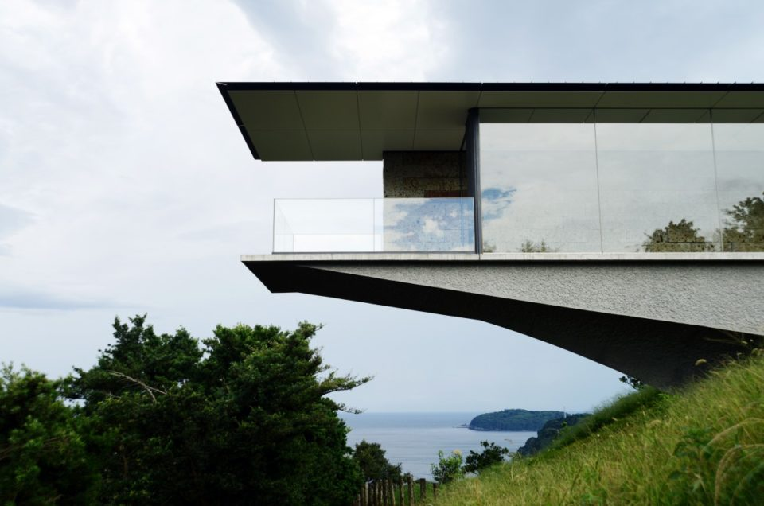
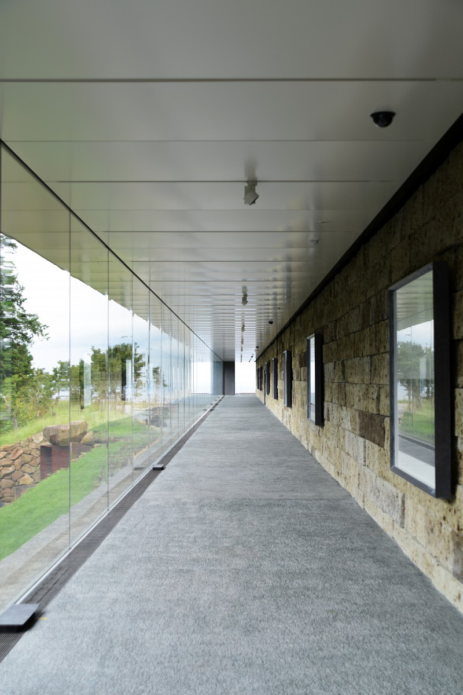
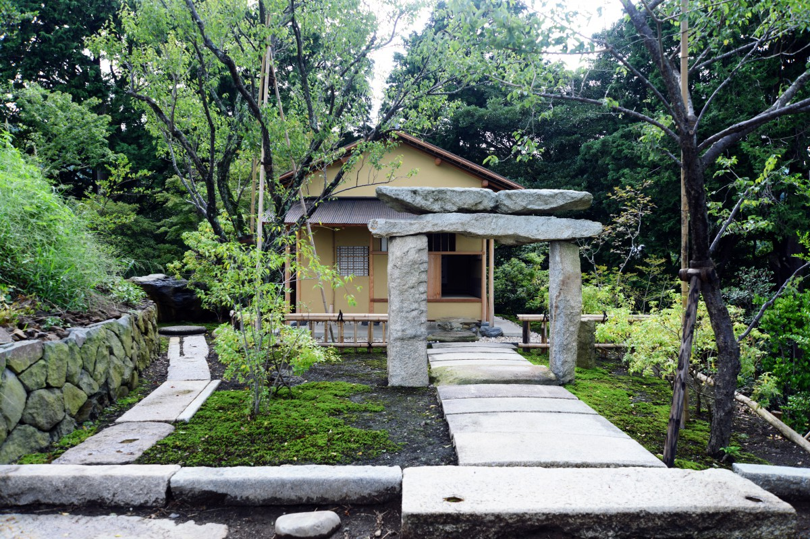
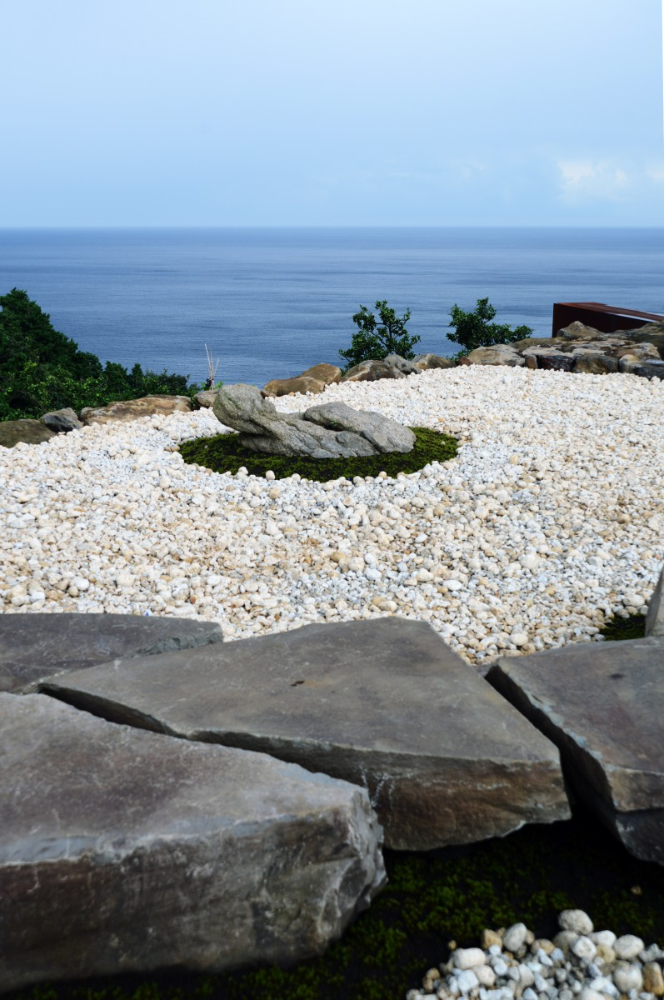
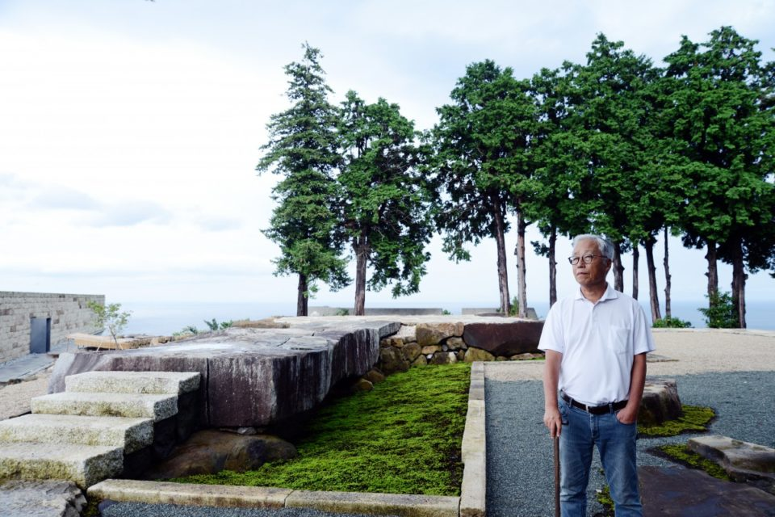
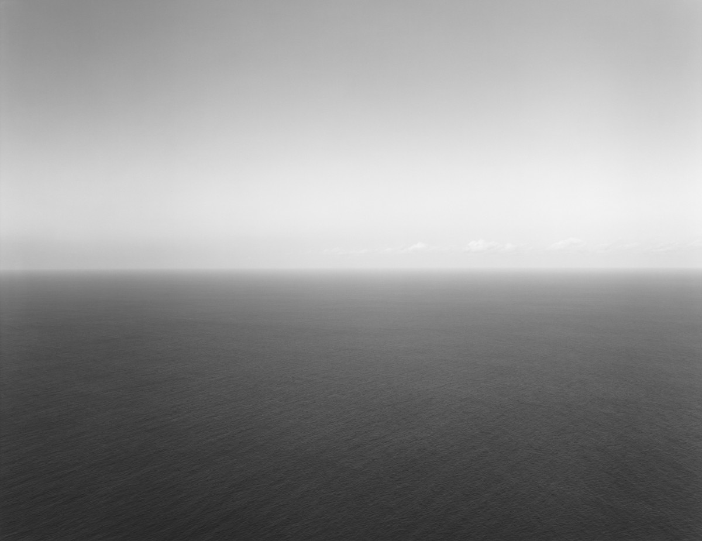
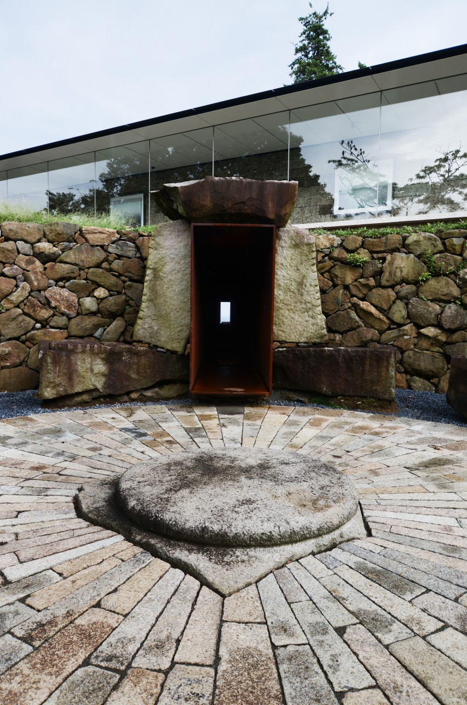
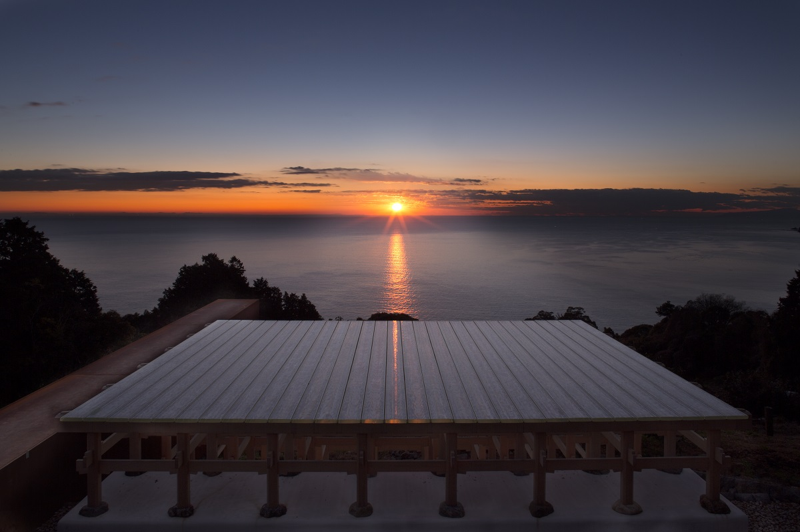
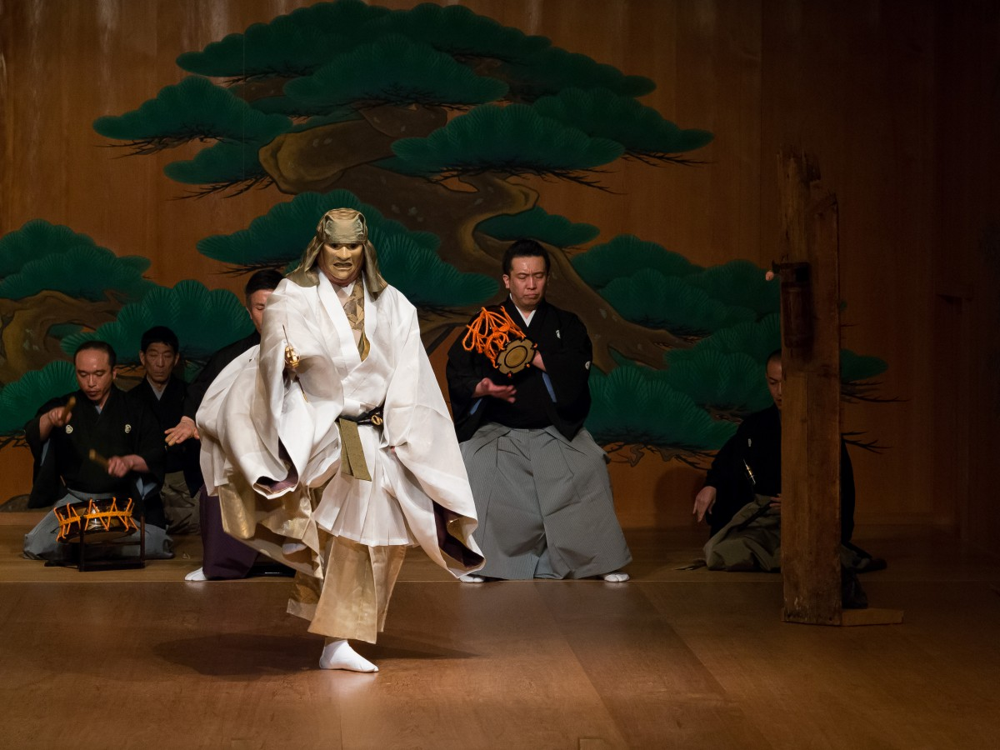

Префектура Канагава · Одавара · искусство
«Эноура сокухосё»: обсерватория солнца и моря Хироси Сугимото в Одаваре

Название «Эноура сокухосё» звучит как метеостанция, но наблюдают здесь не за погодой. Хироси Сугимото, японский художник с мировым именем, превратил склон над морем в огромный инструмент, по которому можно сверять время с солнцем.
Место
Десять лет замысла
Эноура лежит ровно посередине между Одаварой и Атами. Склон здесь крутой: он поднимается к одной из гор внешнего кольца древнего вулкана Хаконэ, зато внизу открывается залив Сагами, а за ним Тихий океан.
На этом склоне 9 октября 2017 года открылся «Эноура сокухосё» фонда Odawara Art Foundation. Слово «сокухосё» по-японски значит «метеостанция», и многие поначалу думают, что здесь изучают погоду. На самом деле это художественный проект Хироси Сугимото, современного художника, которого высоко ценят и в Японии, и в Европе, и в Америке. От замысла до открытия прошло около десяти лет.

Территория занимает больше трёх гектаров. Сюда перенесли памятники из разных концов Японии: постройки эпохи Муромати (1336–1573) и каменные ворота-тории. Рядом построили чайный домик и сады.
Есть и совсем новые сооружения. Каменная сцена повторяет размеры сцены театра но. «Сцена из оптического стекла» сделана по точным меркам полукруглого древнеримского театра, только пол у неё из огромных блоков оптического стекла. Стены галереи длиной 100 метров сложены из туфа ояиси, пористого камня с живой фактурой. Классика и современность, старые формы и новые идеи соединяются здесь в один пейзаж.
Свет
Склон как оптический прибор

Главное здесь даже не постройки. Сугимото задумал всю территорию как один оптический прибор. Расположение и направление главных зданий рассчитаны по солнцу, которое каждый день меняет высоту и точку восхода.
В день зимнего солнцестояния солнце встаёт точно по оси «сцены из оптического стекла», в день летнего его первые лучи проходят через всю 100-метровую галерею с её дальнего конца. В дни весеннего и осеннего равноденствия солнце поднимается в центре каменных тории, если смотреть на них из чайного домика «Утётэн». Этот домик построен по образцу «Тайана», знаменитой чайной комнаты Сэн-но Рикю.

«Эноура сокухосё» можно назвать прибором, который помогает заново увидеть солнце и море, неизменные с древности. Здесь человек остаётся наедине со своими мыслями, и, возможно, через возвращение к истокам яснее видит будущее.
Замысел
Зачем художнику обсерватория

В своих фотографиях Сугимото много лет смотрит на время, которое течёт сквозь человеческую жизнь и уходит дальше. Обсерваторию над морем он построил на собственные деньги, и очень большие. На вопрос зачем он отвечает так:
«Общество развивается, жизнь становится всё удобнее, а человек, мне кажется, скорее деградирует. В суете не остаётся времени подумать о себе, а дни уходят. Жизнь при этом всё равно конечна. Наверное, древние люди чувствовали ценность жизни острее, чем мы»
Хироси Сугимото

Древние люди выживали рядом с грозной природой, держали себя в строгости, стремились слиться со вселенной, строили огромные храмы и делали священным мир после смерти. Сугимото хотел воссоздать их представление о жизни, соединить его со своими мыслями и сделать место, где современный человек снова учится чувствовать и думает о смысле жизни.
И образ древних людей, и выбор Одавары связаны с детскими воспоминаниями.
«Помню море из окна электрички, которая шла по старой дороге Токайдо. Поезд из Атами в Одавару выходил из тоннеля, и внизу вдруг открывался океан. Глядя на него, я смутно думал: а что думали люди, которые видели этот вид задолго до меня?»
Хироси Сугимото

Будущее
Красота, которая переживёт руины
Сугимото родился в 1948 году в Токио и видел, как город стремительно менялся вместе с послевоенным восстановлением.
«Промышленный рост XX и XXI века, особенно после войны, можно назвать исключительным явлением во всей истории человечества. Мы хотели жизни стабильнее и богаче и перестали замечать, сколько отнимаем у природы. Такие поступки и такой образ мыслей и создают темноту нашего времени»
Хироси Сугимото
Потепление и все остальные беды природы, по его словам, рождены этими желаниями. Если станет совсем плохо и культура последних веков превратится в ничто, что останется?
«Мы смотрим на Акрополь в Греции или на пирамиды Египта, построенные до нашей эры, и думаем о самом разном. Так и то, что мы делаем, отзовётся в мыслях людей будущего. Значит, наша задача создавать то, что останется красивым и тронет сердце, даже когда станет руиной»
Хироси Сугимото

Каменные постройки, которые простоят тысячи лет, и есть послание Сугимото будущему.
Визит
Место, где нечего делать
Чтобы у каждого было своё время, сюда пускают только по записи и ограниченными группами.
«В большом городе, где тесно и людям, и домам, почти не бывает случая просто побыть на просторе без всякой цели. Здесь специально нечего делать. Но если сесть там, где нравится, смотреть, как в небе кружит коршун, слушать насекомых и волны, начинаешь замечать мелочи природы, которых обычно не видишь. Притуплённые чувства становятся острее, и приходит ощущение, что ты живёшь вместе с огромным живым миром. Если всем телом почувствовать мельчайшие перемены вокруг, станет понятно, зачем человек существует на этом свете»
Хироси Сугимото

В 2019 году вход стоил 3000 иен без налога, дети младше средней школы не допускаются. В 2026 году посещение по-прежнему только по предварительной записи: два сеанса, 10:00–13:00 и 13:30–16:30, закрыто по вторникам и средам, запись онлайн не позже чем за два дня.
«Эноура сокухосё» (Odawara Art Foundation)
- Адрес
- префектура Канагава, Одавара, Эноура, 362-1
- Телефон
- +81 465-42-9170
- Часы работы
- только по записи, ограниченными группами, около 2 часов. Апрель–октябрь: три сеанса, в 10:00, 13:00 и 16:00; ноябрь–март: два сеанса, в 10:00 и 13:00
- Выходные
- среда
- Цены / Вход
- 3000 иен без налога; дети младше средней школы не допускаются
- Как добраться
- от станции Нэбукава линии JR Токайдо бесплатный автобус (место выбирают при записи), пешком около 40 минут; данные 2026 года
- Сайт
- odawara-af.com
Фото: Кэндзи Итано.